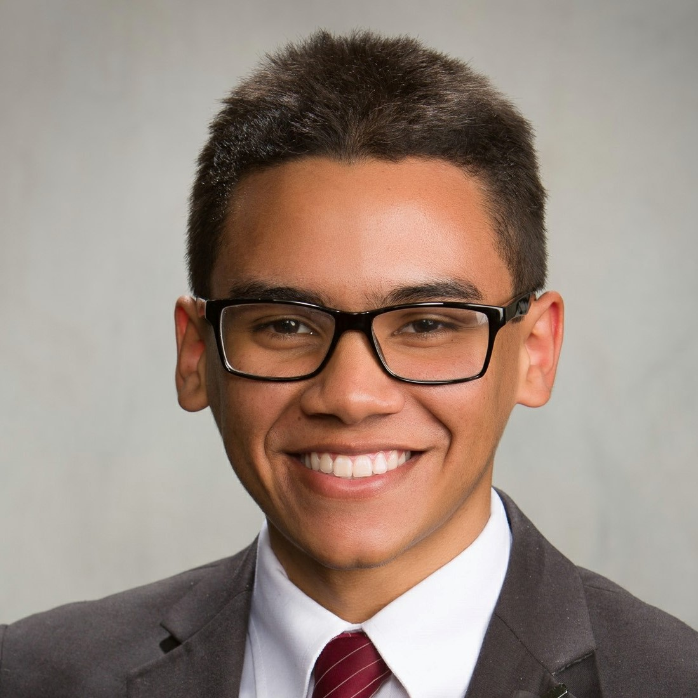
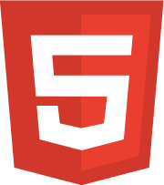
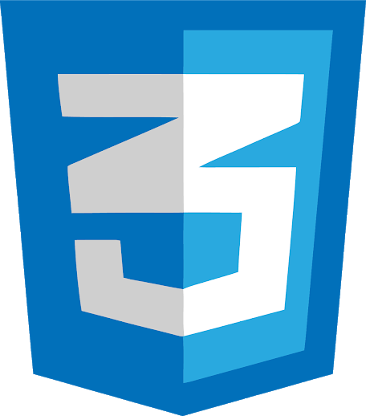
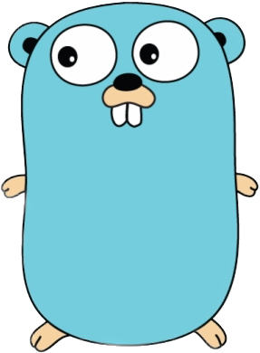

Carlos Ruben Lespin-Silva

carlos.lespin.silva@gmail.com
+1 (787) 988-9447
Software Engineering
I'm Carlos Lespin, a graduate from Brigham Young University - Idaho. Passionate about full-stack engineering and mobile app development, I'm actively seeking internships to enhance my skills and contribute to cutting-edge projects.
Skills


Web Development
I'm Carlos Lespin, a graduate from Brigham Young University - Idaho. Passionate about full-stack engineering and mobile app development, I'm actively seeking internships to enhance my skills and contribute to cutting-edge projects.



Object-Oriented Programming
I'm Carlos Lespin, a graduate from Brigham Young University - Idaho. Passionate about full-stack engineering and mobile app development, I'm actively seeking internships to enhance my skills and contribute to cutting-edge projects.
Mobile App Development
I'm Carlos Lespin, a graduate from Brigham Young University - Idaho. Passionate about full-stack engineering and mobile app development, I'm actively seeking internships to enhance my skills and contribute to cutting-edge projects.
Backend & Databases
I'm Carlos Lespin, a graduate from Brigham Young University - Idaho. Passionate about full-stack engineering and mobile app development, I'm actively seeking internships to enhance my skills and contribute to cutting-edge projects.



Education
Brigham Young University - Idaho / Software Engineering BS
Jan 2020 - PRESENT, Rexburg, ID
Currently studying Software Engineering with a concentration on Software Design which encompasses the following topics: efficiency metrics, modularization, encapsulation, design patterns, relation diagrams (UML, DFD, etc..), and unit testing.
Ana D. Flores Santana Vocational School / Architectural Drafting
Aug 2014 - Jun 2016, Puerto Rico
Graduated from an industrial school, studying architectural drafting. I designed the structural work for homes, consisting of hand-drafting designs, building scale models, sketching electrical/plumbing layouts, and using programs like AutoCAD and SketchUp to create 3D-rendered models of properties.
Work History
BYU - Pathway / Technical Support
Aug 2021 - Sept 2022, Salt Lake City, Utah
Part of a specialized team in charge of troubleshooting the institution's software for planning students' semesters. The role included communicating with students about issues in their planners, troubleshooting bugs in the system, and working alongside Technical Support to report these bugs to the Developers.
Westgate Resorts & BlueGreen Vacations / Sales Representative
May 2019 - Jan 2020, Orlando, FL
I worked as a sales representative for resorts in central Florida; my position consisted of giving presentations to families who’d be interested in our various vacation programs, showing them properties, finding their needs, and extensively negotiating with them on prices.